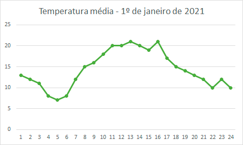

Videoaula
Os gráficos e tabelas podem resumir de maneira sistemática um conjunto grande de informações além de proporcionar uma visualização mais intuitiva das relações entre variáveis ou categorias distintas. Apresentaremos aqui os principais elementos de cada uma dessas representações e algumas de suas possíveis variações. Trabalharemos também com o conceito de distribuição de frequências para diferentes tipos de variáveis.
Teoria na Prática
Gráficos no Excel
Uma das ferramentas mais comuns para análise, armazenamento e organização de dados em planilhas é o Excel. Esse software fornece diversas funções que podem facilitar a construção de gráficos e, consequentemente, a análise de dados e as possíveis relações entre eles. Este é um dos vários tutoriais que você pode encontrar na internet para esse e outros softwares gráficos.
A construção de gráficos e tabelas se torna muito mais simples quando utilizamos um software que já possui diversos recursos disponíveis apenas ao clicar em um botão. O Excel da Microsoft é um dos softwares mais populares para organização e disponibilização de dados em forma de tabelas ou planilhas. Nele, você dispõe de diversos recursos gráficos que podem ser facilmente acessados de maneira intuitiva e dinâmica.
Explore outros recursos do Excel e esboce diferentes gráficos para uma mesma coleção de dados. Você conhece outros softwares que disponibilizam ferramentas similares para a construção de gráficos?
Livro Didático
Faça o download do capítulo desta Unidade
Exercícios de Fixação
-
QUESTÃO 1
Observe o seguinte gráfico da temperatura média de uma cidade.

Assinale a alternativa que apresenta corretamente o tipo de gráfico utilizado para a representação da temperatura média a cada hora do dia 1º de janeiro de 2021 nesta cidade.
-
AGráfico de linhas.
Trata-se de um gráfico de linhas no qual o tempo (em horas) é representado no eixo horizontal e as variações de temperatura seguem uma linha poligonal.
-
BGráfico de barras.
Seção 1 - Tipos de gráficos.
-
CGráfico de setores.
Resposta incorreta.
-
DGráfico de horas.
Seção 1 - Tipos de gráficos.
-
EHistograma.
Seção 1 - Tipos de gráficos.
-
-
QUESTÃO 2
Considere a tabela a seguir com os dados coletados de uma pesquisa realizada com alunos de uma universidade.
Entrevistado Sexo Curso Idade #1 Masculino Direito 21 #2 Feminino Administração 23 #3 Feminino Ed. Física 18 #4 Masculino Direito 22 #5 Feminino Biologia 23 De acordo com os dados da tabela, aponte o sexo e a idade do entrevistado número #4:
-
ASexo: masculino;
Idade: 22.Os dados do entrevistado #4 está na linha cujo identificador é #4 e seu sexo e sua idade podem ser encontrados nas células referentes às colunas especificadas.
-
BSexo: masculino;
Idade: 21.Seção 2 - Tipos de tabelas.
-
CSexo: feminino;
Idade: 22.Seção 2 - Tipos de tabelas.
-
DSexo: feminino;
Idade: 18.Seção 2 - Tipos de tabelas.
-
ESexo: masculino;
Idade: 18.Seção 2 - Tipos de tabelas.
-
-
QUESTÃO 3
Avalie as asserções e a relação proposta entre elas.
Os gráficos de setores são muito utilizados para comparar a proporção da parte com o todo.
PORQUE
Cada categoria em um gráfico de setores é representada por uma “fatia” proporcional ao número de ocorrências dessa categoria dentro da amostra ou da população.
Sobre as asserções apresentadas, assinale a alternativa correta.
-
AAs duas asserções são verdadeiras, e a segunda é uma justificativa correta da primeira.
De fato, esse é um dos principais usos dos gráficos de setores, em que cada categoria é representada por um setor proporcional ao número de ocorrências.
-
BAs duas asserções são verdadeiras, mas a segunda não é uma justificativa correta da primeira.
Seção 1 - Tipos de gráficos.
-
CAs duas asserções são falsas.
Seção 1 - Tipos de gráficos.
-
DA primeira asserção é verdadeira, e a segunda é falsa.
Seção 1 - Tipos de gráficos.
-
EA segunda asserção é verdadeira, e a primeira é falsa.
Seção 1 - Tipos de gráficos.
-
-
QUESTÃO 4
Analise a seguinte tabela que apresenta a distribuição de frequências referente ao nível de escolaridade dos entrevistados.
Nível de escolaridade Frequência Porcentagem Ensino Médio incompleto 4 11% Ensino Médio Completo 10 28% Ensino Superior Incompleto 12 33% Ensino Superior Completo 10 28% Assinale a alternativa que apresenta corretamente a classificação do tipo de dado utilizado para a distribuição de frequências acima.
-
ADado nominal.
Seção 3 - Distribuição de frequências.
-
BDado discreto.
Seção 3 - Distribuição de frequências.
-
CDado contínuo.
Seção 3 - Distribuição de frequências.
-
DDado ordinal.
Como é possível exibir uma ordem dentro das categorias, o nível de escolaridade é um dado ordinal.
-
EDado numérico.
Seção 3 - Distribuição de frequências.
-
-
QUESTÃO 5
Em um gráfico de barras, as variáveis, geralmente apresentadas no eixo horizontal, são __________; enquanto que em um histograma, a variável do eixo vertical é __________.
Assinale a alternativa que completa corretamente e em ordem as lacunas.
-
Acategóricas; nominal.
Seção 1 - Tipos de gráficos.
-
Bquantitativas; nominal.
Seção 1 - Tipos de gráficos.
-
Ccategóricas; qualitativa.
Seção 1 - Tipos de gráficos.
-
Dcategóricas; quantitativa.
Nos histogramas, a variável apresentada no eixo horizontal é quantitativa; enquanto que no gráfico de barras a variável é categórica. Ambas as representações são muito semelhantes, mas essa é a principal diferença que distingue as duas representações.
-
Equantitativas; qualitativa.
Seção 1 - Tipos de gráficos.
-
-
CONCLUSÃO
Teste concluído com sucesso!
Você fez 15 tentativas e acertou 5, tendo um aproveitamento de 33.33%.100%
Infográfico
Neste infográfico, você encontrará os diferentes tipos de gráficos que foram apresentados nesta unidade e suas principais aplicações. Essa é uma forma de comparar os diversos tipos de representação gráfica e compreender melhor qual tipo é mais recomendável para cada tipo de informação que se deseja transmitir. Apresentaremos alguns exemplos simples somente para ilustrar os modelos de gráficos.
{kind=link}
Além da Sala de Aula
Neste vídeo, temos um tutorial de como criar gráficos em um dos softwares mais populares de planilhas. Existem diversos softwares que podem auxiliar na construção e na organização dos seus dados. Também é fácil encontrar tutoriais na internet sobre como trabalhar com tais softwares. Essa é uma das sugestões que você pode usar para construir e elaborar seus próprios gráficos e tabelas.
Acesse aquiPodcast
Os gráficos e tabelas são representações fundamentais para a análise de dados e, portanto, para a Estatística. Vamos rever algumas de suas principais características e relembrar algumas das aplicações dos diferentes tipos de gráficos que foram trabalhados nesta unidade. Trataremos também das distribuições de frequência que podem auxiliar a compreender como a nossa amostra ou população está distribuída em relação a uma determinada variável.
Clicar aqui para ler a Transcrição do Áudio
As tabelas e os gráficos são formas mais concisas de representar dados e identificar relações entre variáveis. Nesta unidade trabalhamos com essas duas representações e vamos agora retomar algumas de suas características e aplicações.
As tabelas são formadas por linhas e colunas. Cada cruzamento de uma linha com uma coluna corresponde a uma célula onde são inseridas as informações.
Na primeira linha de uma tabela encontramos os rótulos das colunas, enquanto que na primeira célula de cada linha encontra-se o identificador de linha.
Podemos utilizar tabelas para reunir um levantamento de dados, uma pesquisa realizada ou um estudo feito. As aplicações para as tabelas são as mais variadas e estão presentes em notícias, publicações acadêmicas e até mesmo em todo alimento industrializado nas tabelas nutricionais.
Os gráficos podem ser representações visuais que ajudem a visualizar e compreender de maneira mais intuitiva relações e comparações entre dados. Um dos tipos mais comuns são os gráficos de setores que ajudam a comparar a parte com o todo.
Popularmente conhecido como gráfico de pizza, neste tipo de gráfico cada categoria é representada por um setor de um círculo proporcional ao número de ocorrências de cada categoria da variável que está sendo analisada.
Os gráficos de barras também são muito comuns. Geralmente as categorias da variável se encontram no eixo horizontal e cada uma delas tem uma barra que corresponde ao número de ocorrências daquela categoria dentro da amostra ou da população.
Os gráficos de linhas são geralmente utilizados para descrever variações de dados com relação ao tempo. Neste tipo de representação o tempo é disposto no eixo horizontal e a linha poligonal segue as variações conforme o tempo.
As distribuições de frequência também são ferramentas importantes para uma boa análise estatística. Nesse tipo de distribuição podemos utilizar tabelas e gráficos.
Os dados analisados em uma distribuição de frequências podem ser variados: dados nominais, dados ordinais, dados discretos e dados contínuos. Neste tipo de distribuição verificamos a frequência da ocorrência de cada categoria ou valor para determinada variável.
Como vimos nesta unidade, os gráficos podem nos influenciar a estabelecer certas relações e correspondências entre variáveis com uma relação de causa e consequência que pode ser verdadeira ou não.
Precisamos sempre ter um olhar crítico às informações apresentadas em um gráfico e verificar a veracidade dos dados que foram utilizados para esboçar cada gráfico.
Pesquise mais exemplos de gráficos em publicações acadêmicas, livros didáticos, notícias e outros meios de comunicação cotidianos e identifique seu tipo e as variáveis representadas. Bons estudos!
Referências
-
HASHTAG TREINAMENTOS. Como fazer gráfico de coluna no Excel - Passo a Passo completo. Disponível em: https://www.youtube.com/watch?v=9e4nPtgoYoI. Acesso em: 7 jun. 2021.